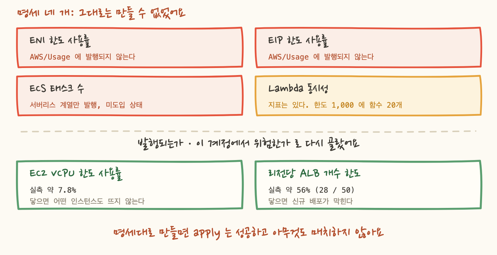
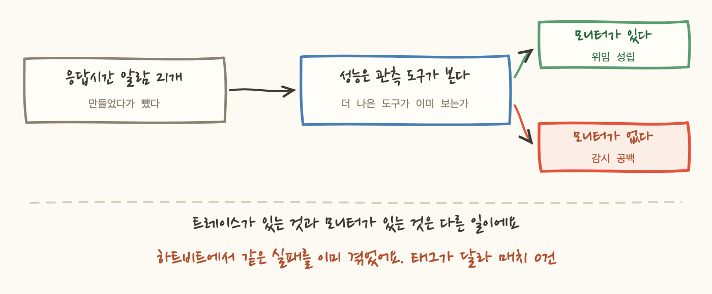

설계서 끝에 「다음」이라고 적어둔 표가 있었어요. 다섯 줄이고, 줄마다 왜 그것부터인지가 한 문장씩 붙어 있었습니다. 위에서 아래로 차례차례 지워나가면 되는 표라고 생각했어요.
실제로 지운 것은 세 줄입니다. 한 줄은 절반만 지웠고, 한 줄은 지울 수 없다는 것을 확인하는 데 시간을 썼습니다. 그리고 그 세 줄 중 둘은 계획에 적힌 수단이 아닌 다른 수단으로 지워졌어요.
표 밖에서 더 크게 어긋난 것도 있었습니다. 메타 항목에 적어둔 쿼터 감시 네 개가 전부 그대로는 만들 수 없는 것이었어요. 이 글은 계획과 실제가 어긋난 기록이고, 어긋나는 방식이 한 가지가 아니라는 이야기입니다.
먼저 결과만 적을게요.
2번 보안 계층은 P1 세 자리가 통째로 비어 있던 항목이었어요. 위협 탐지 서비스는 켜져 있는데 알림 경로가 없어서, 확인해보니 높은 등급의 탐지 결과 세 건이 아무도 보지 않은 채 남아 있었습니다. 이벤트 룰 아홉 개로 채웠고, 그 과정에서 리전 문제를 밟았는데 그건 4장에서 쓸게요.
3번 ALB는 대상을 고르는 기준을 이름이 아니라 태그로 정했습니다. 태그 스키마를 어디에 무엇을 다는지까지 결정으로 못박아둔 게 여기서 값을 했어요. 다만 정직하게 적으면, 그 기준으로 고른 결과 목록은 코드 안에 리터럴로 적혀 있습니다. 기준은 태그인데 목록은 손으로 적힌 상태라, 그 목록이 실물과 어긋나는지는 따로 검사해야 했어요. 그 검사가 6편의 주제입니다.
4번은 절반입니다. ASG 쪽은 세 갈래로 나눠서 끝냈어요. 전멸과 부분 부족과 스케일 인 실패는 대응이 전부 다르니까요. 그런데 컨테이너 쪽의 「돌고 있는 태스크 수가 목표보다 적다」는 미배포입니다. 그 지표를 얻는 기능이 유료 옵션이라서요. 이게 지금 유일하게 남은 미배포 P1 이에요.
5번은 보류입니다. 클라우드 사업자가 리전 장애나 강제 재시작을 통보하는 채널을 붙이려 했는데, 지원 플랜 등급 때문에 조회 API 자체가 거부돼요. 응답이 「구독이 필요하다」는 예외입니다. 여기서 판단이 갈렸습니다. 그 예외가 API 조회만 막는 것인지, 이벤트 전달까지 막는 것인지는 문서에 없어요. 만들어보고 안 울리면 그게 「사건이 없었다」인지 「전달이 막혔다」인지 구분할 방법이 없습니다. 그래서 만들지 않고 보류로 적었어요.
한도에 닿는 것은 장애의 원인이 되는데, 닿기 전에는 아무 증상이 없어요. 그래서 사용률로 미리 보자는 항목이었습니다. 설계서에는 네 개가 적혀 있었어요.
구현 전에 사용량 네임스페이스의 실제 발행 목록을 전수 조회했습니다. 넷 다 안 됐어요.
어긋나는 방식이 두 종류였어요. 앞의 셋은 지표가 없어서 안 되고, 넷째는 지표가 있는데 안 울려서 안 됩니다. 뒤쪽이 더 나빠요. 앞의 셋은 만들려고 하면 에러가 나거나 빈 지표라 눈에 걸리는데, 넷째는 만들면 예쁘게 배포되고 커버리지 표에 완료 표시가 찍히고 영원히 조용합니다.
그래서 명세를 버리고 기준을 바꿨습니다. 발행되고, 이 계정에서 실제로 위험한 것으로 다시 골랐어요.
마지막 줄이 중요해요. 한도값을 코드에 박지 않습니다. 한도를 지표로 가져오는 함수가 있으니까요. 박아두면 나중에 한도를 올린 순간 알람이 조용히 거짓이 됩니다. 사용률 20%인데 예전 한도 기준으로 계산해서 계속 초록불인 상태요.
실측값이 낮은 항목을 왜 만드느냐고 물을 수 있어요. 7.8%는 여유가 아주 많다는 뜻이니까요. 이유는 이 한도가 닿았을 때의 증상이 다른 원인과 구분이 안 되기 때문입니다. 인스턴스가 안 뜨는 문제를 몇 시간 파헤친 일이 있었는데, 원인은 서브넷과 시작 템플릿이었어요. 그런데 vCPU 한도 고갈도 정확히 같은 증상을 냅니다. 그때 이 알람이 있었으면 「한도 82%」 한 줄로 후보 하나가 지워졌겠죠.

하트비트는 15분마다 신호를 하나 쏘고, 그 신호가 끊긴 것을 밖에서 세는 장치입니다. 설계서는 이걸 스케줄러로 만드는 것을 전제하고 있었어요.
그런데 스케줄러는 알림 토픽을 타깃으로 지정할 때 IAM 역할을 요구합니다. 그리고 이 스택은 역할을 만들 수 없어요.
명시적 Deny 입니다. 실수로 빠진 권한이 아니라 일부러 막아둔 것이에요. 이 파이프라인에 IAM 권한 하나가 열리면 태그 기반 격리가 통째로 우회되기 때문에, 앞선 결정에서 못박아둔 항목이었습니다. 경계 정책을 붙이면 만들 수는 있어요. 그렇지만 하트비트 하나 때문에 이 스택에 IAM 표면을 여는 것은 값이 안 맞습니다.
그래서 수단을 바꿨어요. 이벤트 룰의 스케줄 표현식은 알림 토픽 타깃에 역할이 필요 없습니다. 서비스 프린시펄로 발행하고, 그 허용은 토픽 정책과 키 정책에 이미 있었어요. 다른 룰들이 쓰고 있었으니까요.
정밀도를 잃는 건 문제가 안 됐어요. 부재를 세는 창이 네 주기라 몇십 초 흔들림은 흡수됩니다. 그리고 얻은 게 더 컸습니다. 알람 경로를 감시하는 물건일수록 자기가 깨질 구석이 적어야 해요. 이 스택에서 가장 중요한 컴포넌트의 부품이 셋에서 둘로 줄었고, 역할과 정책과 경계와 토픽 정책 변경이 전부 사라졌습니다.
여기서 배운 건 이거예요. 권한 경계는 「무엇을 만들 수 있는가」만 정하지 않고 「어떤 설계를 고를 수 있는가」까지 정합니다. 설계서를 쓸 때는 그 경계를 안 보고 썼고, 그래서 스케줄러가 자연스러운 선택으로 보였어요.
보안 계층을 만들면서 밟은 것입니다. 이게 이 시리즈에서 가장 조용한 함정이었어요.
콘솔 로그인이나 IAM 은 글로벌 서비스라서 감사 로그가 한 리전에만 기록됩니다. 그 이벤트를 잡는 룰을 우리 주 리전에 만들면 어떻게 되는지가 문제였어요.
반대 방향도 있었습니다. 감사 로그를 끄거나 암호화 키를 무력화하는 것 같은 API 호출 계열은 호출한 리전에 이벤트가 뜹니다. 그러니까 룰을 한 리전에만 두면 다른 리전에서 벌어진 일은 안 보여요. 그래서 운영하는 두 리전에 사본이 필요했습니다.
그리고 여기서 제일 부끄러운 걸 하나 적을게요. 처음 작성한 주석은 「두 리전을 덮는다」고 적혀 있었는데 사실이 아니었어요. 프로바이더 지정을 붙이지 않아서 한 리전에만 만들어져 있었습니다. 주석이 코드보다 앞서 있었던 거예요. 사람이 읽는 문장은 의도를 적고, 실제로 도는 것은 코드니까요.
4편에서 「조용한 알람을 만드는 네 가지 길」을 정리했는데, 이번 편에서 그 목록이 늘었습니다. 합쳐서 적어둘게요.
목록이 계속 늘어난다는 게 이 프로젝트에서 배운 것 중 하나예요. 새 항목마다 새로운 방식으로 조용해질 수 있습니다. 그래서 규칙을 값으로 두지 않고 절차로 뒀어요. 배포 전에 실측한다. 명세와 다르면 실측을 채택하고 명세 쪽을 고친다.
이건 만들었다가 뺀 이야기입니다. 그리고 1편에서 「관측 도구는 탐지하지 않는다」고 적어둔 원칙에 예외를 하나 만든 기록이에요.
로드밸런서의 응답시간 지표에 알람 스물한 개를 만들어 배포했어요. 감시 책임 경계를 「인스턴스 자체냐, 그 위에서 도는 것이냐」로 그어뒀으니, 리소스가 발행하는 지표는 플랫폼 쪽 소관이 맞았습니다.
배포 직후 두 곳이 즉시 발화했어요. 오탐이 아니었습니다. 한 곳은 응답시간 상위 구간이 30초를 넘고 다른 한 곳은 8초대였고, 나머지는 2초 미만이었습니다. 실제로 느린 거였어요.
문제는 그 카드를 받고 할 수 있는 일이 없었다는 것입니다. 카드는 「상위 구간이 30초다」까지만 말해요. 어느 엔드포인트인지, 어떤 쿼리가 시간을 쓰는지, 특정 클라이언트만 느린지는 안 알려줍니다. 그걸 알려면 관측 도구를 열어야 했고, 열면 이미 답이 거기 있었어요.
그래서 경계를 나누는 기준에 하나를 더 얹었습니다. 더 나은 도구가 이미 그것을 보고 있는가. 계층 기준이 1차이고, 그것으로 우리 것이 된 항목에도 이 2차 기준을 적용해요. 우리 소관이라는 것이 우리가 봐야 한다는 뜻은 아니었습니다. 응답시간 알람 스물한 개를 지웠고, 함수 실행시간 대 타임아웃 항목은 만들지 않기로 했어요.
「살아 있는가」는 계속 우리가 봅니다. 타깃 전멸과 5xx는 그대로 뒀어요. 느린 것과 죽은 것은 다른 사건이니까요.
여기까지가 결정이고, 이제 그 결정문이 스스로 적어둔 미완 전제를 그대로 옮길게요.
그래서 실측값은 지우지 않고 남겼습니다. 알람을 뺀 것이 문제를 뺀 것은 아니니까요. 30초와 8초대라는 숫자를 코드 주석과 감지 목록에 적고, 앱 쪽에 전달할 항목으로 표시했어요. 삭제가 아니라 담당자 이동으로 기록한 겁니다. 그리고 재검토 조건도 같이 적었습니다. 모니터가 없다는 게 확인되면 이 알람을 되살리거나, 모니터를 만드는 일을 우리 일로 가져오기로요.

여기까지 적은 것들은 전부 계획이 틀렸다는 기록입니다. 다 끝난 다음이면 지우는 게 깔끔해 보여요. 지금 상태만 적어두면 문서가 짧아지고 읽기도 쉬우니까요.
그런데 지우지 않기로 했고, 규칙으로 만들었습니다. 명세를 못 지키면 명세를 바꾸고 그 사실을 남긴다. 항목을 지우지 않고 취소선과 대체 표시를 하고, 무엇으로 대체했는지와 왜인지를 적어요.
이유는 하나예요. 같은 제안이 다시 올라올 때 「이번엔 다를까」를 막기 위해서입니다.
지우면 어떻게 되는지 그려보면 분명해요. 반년 뒤에 누가 감지 항목을 다시 훑다가 「한도 사용률 감시가 없네」를 발견합니다. 그러면 그 사람은 처음부터 같은 조회를 다시 합니다. 발행 목록을 전수로 뽑고, 셋이 없다는 걸 다시 확인하고, 넷째가 산술적으로 안 울린다는 걸 다시 계산해요. 그 시간을 아끼려고 표를 남기는 게 아닙니다. 운이 나쁘면 그 조회를 건너뛰고 명세대로 만들어버리고, 그러면 조용한 알람이 하나 더 생기니까요.
없는 감시는 없다는 걸 알 수 있어요. 그런데 조용한 알람은 커버리지 표에서 완료로 보이면서 아무것도 하지 않습니다. 그게 없는 것보다 나쁩니다.